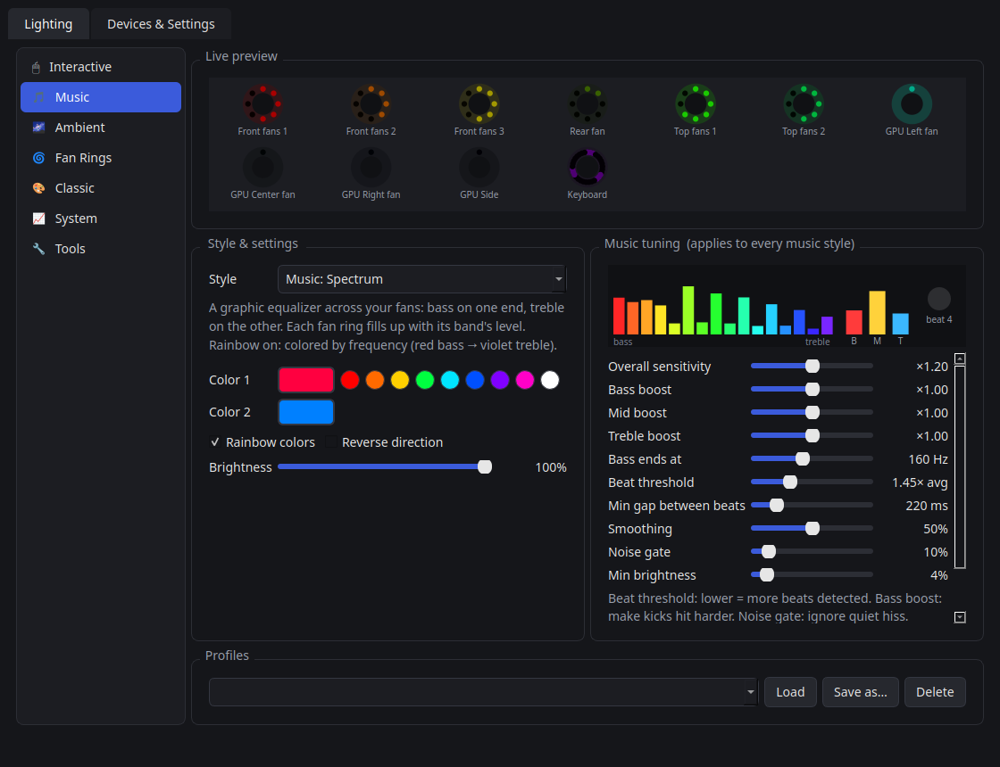
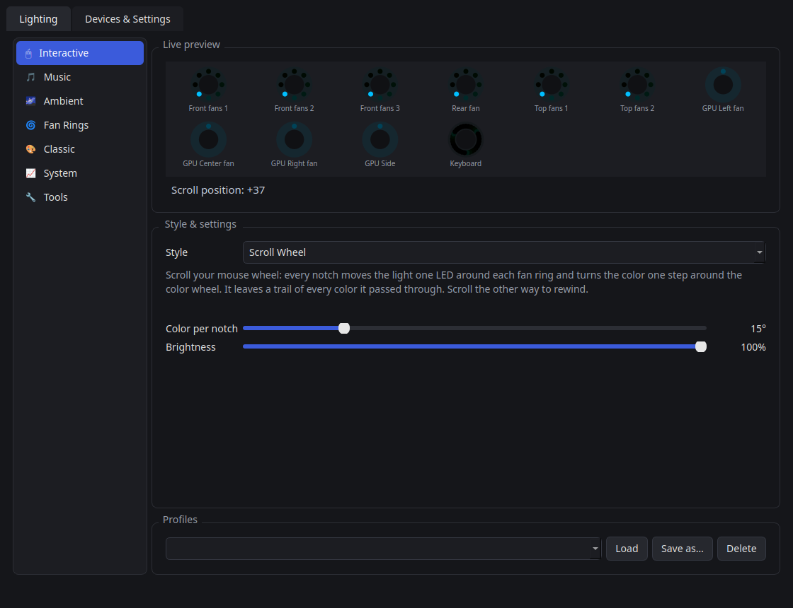
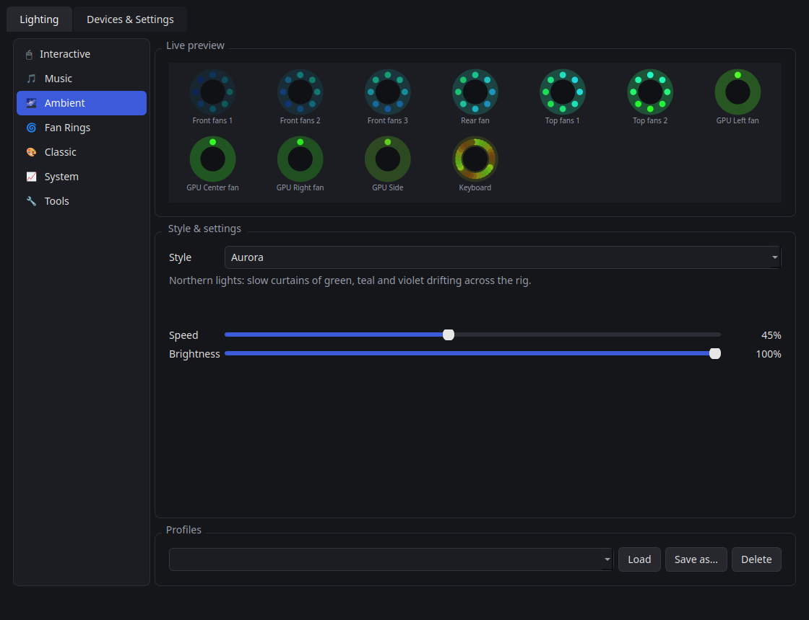
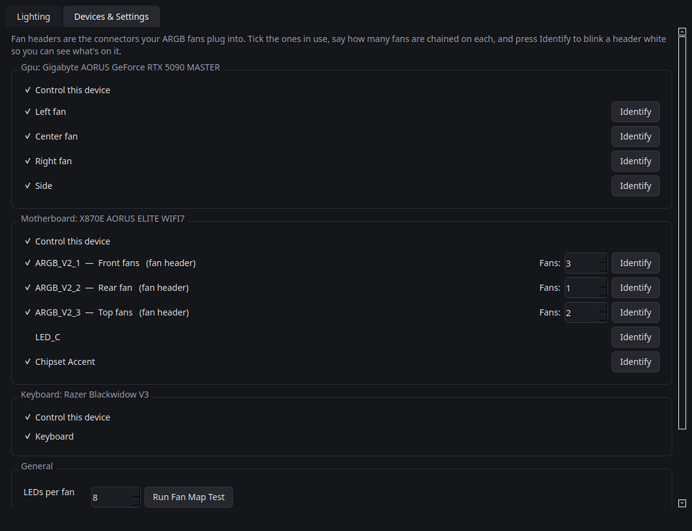

Open source · Linux · Built on OpenRGB
RGB Control
Every fan. Every LED. One clock.
A Linux app that drives your case fans, GPU, motherboard, RAM, keyboard and mouse from a single render clock, so every light moves together. 37 effects, a music engine that hears what you play, little games for your mouse, and a setup wizard that handles the fiddly bits.
- 37 effects
- 7 modes
- MIT licensed
- 0 telemetry
Interactive playground
Play with a rig, right here.
These are the app's own effect algorithms, ported line by line to your browser: same LED positions, same clock, same colors. Pick a mode, pick a style, then poke it.
Features
Everything your lights can do, in one small app.
-
One clock, perfect sync
Every LED on every device is painted from the same render clock. A wave that leaves your front fans reaches the GPU, the RAM and your keyboard right on time, and slow devices are frame-capped so they never drift.
-
37 effects, 7 modes
Interactive, Music, Ambient, Fan Rings, Classic, System and Tools. Each style shows only the settings it actually uses.
-
A music engine that listens
FFT bands and beat detection on whatever your PC plays. Tune bass, mid and treble boost, beat threshold, bass cutoff, smoothing and the noise gate, with a live meter.
-
Interactive and playful
Catch fireflies with your mouse, scroll colors around your fans, throw sparks as you type, launch fireworks with a click, or play Snake across the whole rig.
-
Per-LED fan rings
Effects know where each LED sits around its fan, so spins, marquees, equalizer rings and gauges run LED by LED, not fan by fan.
-
System-reactive
Turn your fans into live CPU, GPU and RAM gauges, a heartbeat that speeds up with load, or a thermometer that runs from blue at 35 °C to red at 85 °C.
-
Tray, profiles and CLI
Lives in the system tray, saves profiles, starts at login, and scripts nicely:
rgbctl set rainbow_wave --speed 60,rgbctl profile Night,rgbctl off. -
Guided setup
A wizard installs dependencies, downloads OpenRGB, sets device permissions, discovers your hardware, then lights each fan header and asks how many fans are on it.
-
Private by design
Interactive effects only count keypresses, never which key, and input capture runs only while an interactive style is selected. No accounts, no telemetry: nothing leaves your machine.
Screenshots
A real desktop app, not a config file.




Install
Three steps. About a minute.
-
Get the code
git clone https://github.com/EntangledQuantum/linux-rgb-control.git -
Run the installer
cd linux-rgb-control && ./install.shA short guided setup installs the dependencies into a private Python environment, downloads OpenRGB, then finds your devices and lights each fan header to ask how many fans are on it. It asks for
sudoonce, only to install device permissions (udev rules and i2c access) so your lights work without root. -
Open RGB Control from your app menu
Pick a mode and a style. Close the window and it keeps running in the tray;
rgbctlworks from any terminal.
Prefer not to use git? Download the tarball from the latest release, extract it, and run ./install.sh inside the folder. Want it hands-off? ./install.sh --yes accepts every default.
How it works
OpenRGB talks to the hardware. RGB Control does the choreography.
-
01
OpenRGB SDK
OpenRGB detects your controllers over USB and SMBus/I2C and exposes them through its SDK server. RGB Control starts its own server on
127.0.0.1:6742if none is running. -
02
rgbctl engine
One render loop maps every LED to a position on your rig and around its fan, runs the chosen effect on a single clock and builds a frame for every device.
- System audio
- Input counts (X11)
- CPU / GPU load & temps
-
03
Your devices
Frames go out in direct mode to fans, GPU, RAM, keyboard and mouse. Slow buses get a frame cap, unchanged frames are skipped, and lights recover by themselves after sleep.
Supported hardware
If OpenRGB supports it, RGB Control can drive it: motherboard ARGB headers, GPUs, RAM, keyboards, mice, LED strips and more. Fan headers are split into individual fans with the number of LEDs per fan you set, so ring effects line up with your real hardware.
FAQ
Questions, answered.
Does it work on Wayland?
Lighting, music, ambient and system effects work on any session. The interactive effects read mouse and keyboard activity through X11, so those need an X11 (Xorg) session.
Does it phone home?
No. There is no telemetry and no account. The only network connection is to the OpenRGB server on your own machine (localhost). Interactive effects count keypresses and never record which key you pressed.
My GPU or RAM lighting doesn't show up.
GPUs and RAM are usually controlled over SMBus/I2C, which needs the i2c-dev module and permission to /dev/i2c-*. The installer sets this up in its device-permissions step. Log out and back in (or reboot) after installing, then run rgbctl setup to look for devices again.
Can I keep the OpenRGB app open at the same time?
Run one at a time. Both will try to drive the lights and fight over every frame. RGB Control happily connects to an OpenRGB server that's already running.
Is the playground on this page the real thing?
The effect math is a direct port of rgbctl/effects.py and rgbctl/effects_fun.py. A few inputs are adapted for the browser: the pointer is read over the preview instead of the whole screen, and CPU load is a slider instead of your real sensors.